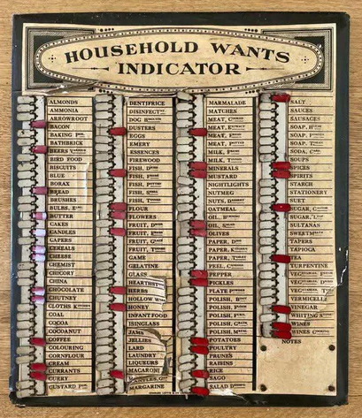

Frequently Asked Questions

The Victorian household wants indicator — a board mounted in the kitchen, one slider per staple, flipped when something ran low — is the oldest version of this idea. Before heading to the market, the person doing the shopping simply read off the marked items. Larder is that. For a kitchen that cooks across a dozen cuisines, on a phone - and your curated recipe vault that helps you decide what to replenish
Tap + on the Recipes tab and paste a recipe URL. Larder works best with clean URLs that point directly to the recipe — for example https://www.seriouseats.com/cantonese-style-braised-brisket-recipe-11700215. Avoid URLs copied from social share buttons, which look like facebook.com/sharer/sharer.php?u=https%3A%2F%2F... — these won’t work. If you’re unsure, open the recipe in your browser and copy the URL from the address bar directly. If the site blocks scraping, tap “Import from text” and paste the recipe text instead.
No. Larder imports from original recipe URLs only. Paprika exports, Instagram posts, and YouTube videos don’t contain structured recipe text Larder can work with. If you want to bring in a recipe from another source, copy the text and use the text import fallback — though we’d recommend linking to the original site where possible.
Yes. Long press on any ingredient or step to edit it. To delete a recipe, long press the recipe card in the Recipes tab.
Yes. Tap + to add an item. Long press any item to remove it.
The app store is full of kitchen apps that let you log weights, expiry dates, nutritional values, and elaborate meal plans. They’re impressively thorough. They’re also the apps you stop opening after two weeks because maintaining them became a second job you never signed up for. Larder simplifies the goal and asks one question: do you have this or not? Keep your stock levels roughly current and your Fresh This Week updated, and your Recipes tab tells you what you can cook tonight. That’s the meal plan — without the overhead.
No. Fresh This Week is yours to manage — tick what you’re planning to buy, uncheck when you’ve used it up. Most people find it naturally resets with their weekly shop. It doesn’t reset on a schedule.
Your purchase is tied to your Google account, so you can reinstall Larder on any Android device logged into the same account at no extra cost. Your pantry and recipes are stored locally though — back up to Google Drive in Settings before switching devices, then restore on the new one.
Your pantry and saved recipes are always available offline. Importing new recipes requires an internet connection — Larder sends the recipe text to Claude to restructure it.
Drop us a line at hello@misego.app.
The founding price of $24.99 is for the first 100 cooks who use Larder seriously, cook across cuisines, and aren’t afraid to tell us what’s missing. Their feedback shapes what Larder becomes. After the first 100, the price moves to $49.99.
Check misego.app for current pricing.